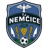

Posledný zápasPrípravka U11
TJ Oponicedomáci
Výsledok 2:2
 Bojná U11hostia
Bojná U11hostiaRemízapolčas 2:2
Návrh webu · nie je to oficiálna stránka klubu
III. liga prípraviek U11, 2. miesto zo 6
Posledný zápasPrípravka U11
Výsledok 2:2
Bojná U11hostiaRemízapolčas 2:2
7–2–1výhry, remízy a prehry vo všetkých súťažiach, skóre 103:40
Ďalšie zápasy zatiaľ nie sú vyžrebované.
III. liga prípraviek U11
| # | Tím | Z | V | R | P | Skóre | B |
|---|---|---|---|---|---|---|---|
| 1 |  TJ Nemčice | 10 | 9 | 0 | 1 | 101:43 | 27 |
| 2 | 10 | 7 | 2 | 1 | 103:40 | 23 | |
| 3 | 10 | 5 | 2 | 3 | 66:64 | 17 | |
| 4 | 10 | 4 | 1 | 5 | 39:47 | 13 | |
| 5 | 10 | 2 | 0 | 8 | 31:70 | 6 | |
| 6 | TJ Oponice | 10 | 0 | 1 | 9 | 16:92 | 1 |
Hráči, ktorí v kalendárnom roku 2026 nastúpili alebo boli v nominácii na zápas (podľa Sportnetu). Pri mládeži uvádzame len mená.